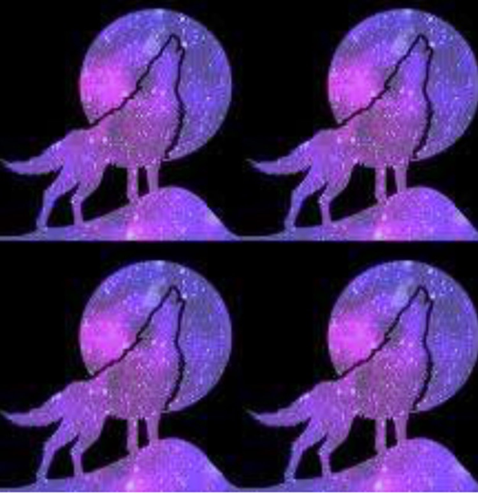

Aurélie Louve, Jeanne Louve
Jeudi (Thursday) 05 décembre, 2019 à 20h
WE LO(U)VE RADIO

We Lo(u)ve radio est un projet de série de performances radio live in situ et nocturnes, proposée par Aurélie Louve et Jeanne Louve.
We Lo(u)ve radio est aussi le symbole d’une déclaration d’amour collective et féminine au médium radiophonique, à son langage, à ce qu’il représente pour nous : avant tout un moment d’écoute et de rassemblement, un moment où nous faisons la part belle et sauvage à l’instinct, à la nature profonde et authentique des êtres et des choses.
Chaque performance naît de la rencontre d’un lieu insolite et inspirant que nous vous dévoilons dans la pénombre. Ce moment particulier où les ombres rôdent, où les lumières vacillent et où il ne reste que le son auquel s’accrocher. Des sons qui racontent, qui inquiètent ou qui rassurent, des sons qui ouvrent l’espace intérieur avec douceur ou sauvagerie, mais toujours avec beaucoup d’instinct. Faut-il encore résister ?
Le collectif, souple, s’agrandira et s’enrichira au fil des rencontres et des rassemblements. Chaque représentation sera conçue avec une artiste invitée dont nous vous réservons la surprise de l’identité.
-
EAR YOU ARE - Festival d'art sonore et radiophonique
1323 minutes de sons/ 8 créations inédites / 53 intervenant.e.s / 21 enceintes / 3 ateliers
au Cinéma Nova / à la Maison Européenne des Auteurs et Autrices / au Théâtre de La montagne magique / au Théâtre Poème 2 / à L’Hectolitre
Auditrices, auditeurs, soyez tout ouïe :
L'Atelier de Création Sonore Radiophonique fait son festival et vous invite pour cinq jours de rencontres autour du son.
« Boum ! » , fait le tympan
En broadcast, en podcast, sur scène, ... elle foisonne, elle résonne, la création sonore va crescendo. Cette édition met le volume sur l’éclectisme des genres et des formes.
Multiples facettes, multiples façons
Ecoutes collectives, sélection jeunesse, radio live, performances, installations et ateliers déjoueront les règles du jeu. Ici tout se tente, tout se commente, tout se réinvente.
Alchimique, Curieux, Sismique, Radieux
Chaque moment sera l'occasion de plonger dans la diversité des approches de ce huitième art en plein essor.
EAR YOU ARE, un rendez-vous absolu pour vos oreilles !
http://festival2019.acsr.be/
-
HECTOLITRE
Rue de l’Hectolitre 3-5
Bruxelles 1000